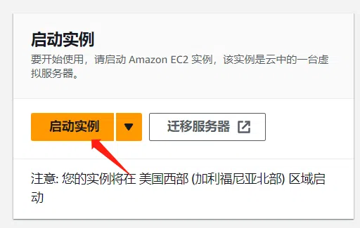
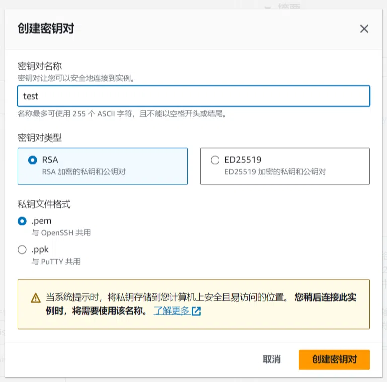
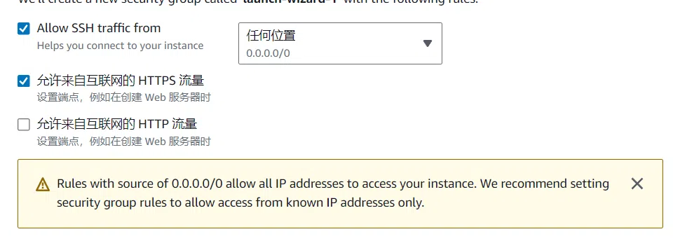
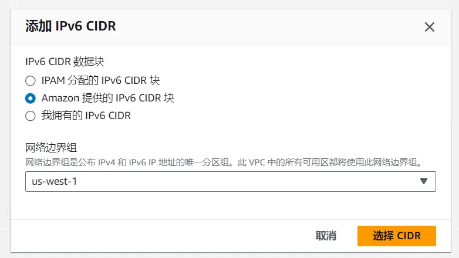
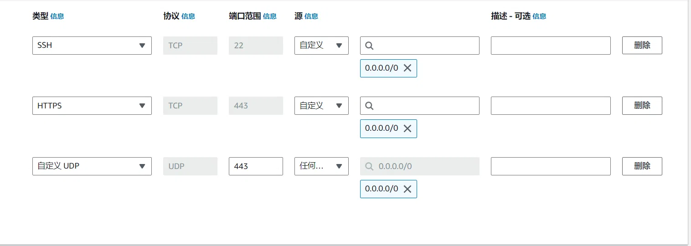

# nginx 与 HTTP/3
# 开始之前
这是本站第三篇关于 HTTP/3 (或者说 QUIC) 的文章，从 caddy 到 nginx-quic 再到现在的 nginx 1.25，它终于正式支持了 HTTP/3 协议。
当然，openssl 还不支持且 2024 年前完成 QUIC 支持希望渺茫，因此本文使用 boringssl 代替 openssl。 quictls 和 libressl 同样可以完成此工作，未来可能会提供相关教程（挖坑）
本文带有一定的广告内容，如果无法接受，您可以点击左侧的目录跳过相关部分。
# 为什么选择 HTTP/3
这里有一个可能不太恰当的比喻:
一天中午，你选择到 HTTP 街用餐，在你面前有两家餐厅：HTTP/2 和 HTTP/3 餐厅。
第一天你选择了 HTTP/2 餐厅进入，你点了许多美食和一个三明治。HTTP/2 餐厅的后厨可以同时制作多道菜，因此你认为你很快就能吃到美食。然后 HTTP/2 餐厅的
服务员告诉你：“三明治出了点问题，后厨没法上菜。” 然后就出现了一个问题，根据 HTTP/2 餐厅的规则，在这道菜上菜之前，后面的菜不能上菜，即使它已经被制作好了。
你花了很多时间来和服务员沟通，以确定 “三明治是不是真的出问题了” 和 “下一道菜什么时候上”。但这个三明治阻塞住了整个队列，因此你只能等后厨花费一段时间来处理三明治问题。
第二天你选择了 HTTP/3 餐厅，在这里，你只需要扫描准备好的二维码，然后点菜，随后等待菜品即可。和昨天一样，三明治再次堵塞了队列，但是这次 HTTP/3 餐厅可以选择不按顺序上菜。
后厨很快就准备好了其他菜品，因此你并没有等待多久，而且消息已经被发送到了你的手机上，你并不需要和服务员花费时间沟通。
在上述例子中，“三明治” 代表了一个传输失败的数据包，而 HTTP2 虽然可以进行多路复用 (即同时制作多道菜品)，但如果数据包出现问题，仍可能阻塞整个队列。并且 TCP 的握手流程相当繁琐，
需要花费很多时间来解决重发问题。而 HTTP3 则可以选择先发送什么后发送什么，即使 “三明治” 出了问题，也不会导致队列被整体阻塞，而且 UDP 在此方面效率较高，至少比 HTTP2 餐厅的服务员们要高多了。
一个更细致的解释
这个比喻用一个生动的场景来解释了 HTTP/2 和 HTTP/3 之间的主要区别。HTTP/2 和 HTTP/3 都是基于 TCP 和 UDP 的协议，它们用于在网络上传输数据。HTTP/2 使用 TCP，而 HTTP/3 使用 UDP。TCP 和 UDP 的区别在于，TCP 是一种可靠的协议，它保证了数据包的有序和完整的到达，但是如果数据包丢失或损坏，它会导致传输的延迟和阻塞。UDP 是一种不可靠的协议，它不保证数据包的有序和完整的到达，但是它可以更快地传输数据，而且不会因为数据包的丢失或损坏而阻塞整个流。
因此，HTTP/2 餐厅的规则类似于 TCP 的机制，它要求所有的菜品按照点菜的顺序上桌，如果有任何一道菜出了问题，就会影响后面的菜品，即使它们已经准备好了。这就是所谓的头部阻塞，它会降低传输的效率和用户的体验。HTTP/3 餐厅的规则类似于 UDP 的机制，它允许菜品按照任意的顺序上桌，如果有任何一道菜出了问题，也不会影响其他的菜品，它们可以继续被送到客人的手中。这就是所谓的无头部阻塞，它会提高传输的效率和用户的体验。
这个比喻也展示了 HTTP/2 和 HTTP/3 的另一个区别，就是多路复用和多流的概念。多路复用是指在一个 TCP 连接上同时传输多个请求和响应，而多流是指在一个 UDP 连接上同时传输多个独立的数据流。HTTP/2 使用多路复用，而 HTTP/3 使用多流。多路复用和多流的区别在于，多路复用是在一个连接上共享资源，而多流是在一个连接上分配资源。多路复用的优点是可以减少连接的数量和开销，但是缺点是如果一个请求或响应出了问题，就会影响整个连接上的其他请求或响应。多流的优点是可以隔离不同的数据流，使它们互不干扰，但是缺点是需要更多的连接和开销。
因此，HTTP/2 餐厅的后厨类似于多路复用的机制，它可以同时制作多道菜，但是如果有一道菜出了问题，就会影响其他的菜。HTTP/3 餐厅的二维码类似于多流的机制，它可以同时传输多个数据流，但是如果有一个数据流出了问题，也不会影响其他的数据流。
注：可能存在问题，因为字数太多懒得看第二遍（逃
# 使用 Nginx-quic
# 前提条件
本教程需要一个基于 ubuntu 22.04 (可以更高) 的服务器，并需要宝塔面板。如果你还没有的话，AWS 的 EC2 就是一个好选择：
现在注册亚马逊云科技账户可以享受 12 个月免费套餐，其中包括 Amazon EC2 云服务器、S3 云储存、Cloudfront CDN 等多种热门产品。
为节省时间，此处省略注册账号的过程，仅保留新建实例的过程:
首先在控制台点击启动实例:

随后输入相关内容，实例选择 t2.micro ，系统选择 ubuntu 22.04LTS ，随后创建密钥对：

根据需求选择，一般建议使用 pem 格式，提前选择放行 HTTPS 端口，节省时间:

一切完成之后，启动实例，等待创建完成后使用 SSH 连接到终端即可。
另外建议开启 IPV6，操作如下：
进入此 EC2 对应的 VPC，选择 编辑CIDR ，随后添加新的 IPV6 CIDR 块，选择 Amazon 提供的 IPv6 CIDR 块 ，随后返回。

进入此 EC2 对应的子网，右键 编辑 IPV6 CIDR ，添加即可。
然后进入路由表，为 ::/0 添加一条和 0.0.0.0/0 一致的路由。
随后进入 EC2 设置 ，联网 -> 管理 IP 设置，分配新的 IPV6 地址。
现在，这台 EC2 实例已经支持 IPV6 了。
下文均可在此 EC2 实例的 SSH 终端内进行。
本文全程基于 root 权限进行。
# 安装依赖
在终端运行如下指令:
apt install build-essential ca-certificates zlib1g-dev libpcre3 libpcre3-dev tar unzip libssl-dev wget curl git cmake ninja-build golang | |
# 需要启用源代码软件源 (deb-src) | |
apt-get build-dep nginx |
# 编译 ssl 库
# 编译 boringssl
下列指令需要 gcc 支持 C++14 或更高标准，建议升级为 gcc9 以上版本
git clone --depth=1 https://github.com/google/boringssl.git | |
# github 速度问题自行解决 | |
cd boringssl | |
mkdir build | |
cd build | |
cmake -GNinja .. | |
ninja | |
cd ../.. |
如果出现了网络问题，执行如下命令:
go env -w GOPROXY=https://goproxy.cn,direct |
# 安装 nginx-brotli (可选)
brotli 是一种由 google 提供的新型压缩方式，比传统的 gzip 在体积方面要小很多[1]
安装步骤如下，为保证路径合理，在 /www/server 下进行:
cd /www/server | |
git clone https://github.com/google/ngx_brotli.git | |
cd ngx_brotli | |
# vim .gitmodules | |
# git submodule sync | |
git submodule update --init |
如果 clone 时使用了 github 加速，请解除第 4 行注释并修改此文件内的 url 为加速后链接，随后执行第 5 行后再进行下一步。
# 获取和配置 nginx
截止本文写就时，Nginx 最新版为 1.25.3，因此下列链接使用此版本:
wget https://nginx.org/download/nginx-1.25.3.tar.gz | |
tar -xzvf nginx-1.25.3.tar.gz |
随后运行:
nginx -V |
输出内容应该类似于:
nginx version: nginx/1.25.3 | |
built by gcc 11.4.0 (Ubuntu 11.4.0-1ubuntu1~22.04) | |
built with OpenSSL 1.1.1q | |
TLS SNI support enabled | |
configure arguments: --user=www --group=www --prefix=/www/server/nginx --add-module=/www/server/nginx/src/ngx_devel_kit --add-module=/www/server/nginx/src/lua_nginx_module --add-module=/www/server/nginx/src/ngx_cache_purge --with-pcre=pcre-8.43 --with-http_v2_module --with-stream --with-stream_ssl_module --with-stream_ssl_preread_module --with-http_stub_status_module --with-http_ssl_module --with-http_image_filter_module --with-http_gzip_static_module --with-http_gunzip_module --with-ipv6 --with-http_sub_module --with-http_flv_module --with-http_addition_module --with-http_realip_module --with-http_mp4_module --add-module=/www/server/nginx/src/ngx_http_substitutions_filter_module-master --with-ld-opt=-Wl,-E --with-cc-opt=-Wno-error --with-ld-opt=-ljemalloc --with-http_dav_module --add-module=/www/server/nginx/src/nginx-dav-ext-module --with-openssl=/www/server/nginx/src/openssl |
此时，删除 --with-openssl=... ，并添加 --with-http_v3_module 和 --with-cc-opt=-I../boringssl/include --with-ld-opt='-L../boringssl/build/ssl -L../boringssl/build/crypto'
修改 --with-pcre=pcre-8.43 为 --with-pcre=/www/server/nginx/src/pcre-8.43
注意 boringssl 路径，编译参数和 nginx-quic 有不同，请勿直接沿用
如果你在上文中配置了 brotli，再添加 --add-module=/www/server/ngx_brotli 在尾部
现版本 OSCP 装订已可正常使用，无需注释相关配置
# 编译 nginx
部分环境编译时可能出现警告，如果出现了建议检查 Boringssl 路径和依赖。
均确认无误请修改 objs/Makefile 中的第三行，删除 -Werror 参数
在 nginx 对应目录下运行如下指令:
./configure # 使用你的编译参数替换这段 (包括 #号) | |
make |
如果成功结束则代表运行成功，此时可以替换 nginx 了
# 替换 nginx
mv /www/server/nginx/sbin/nginx{,.bak} # 备份原本的 Nginx 文件 | |
cp objs/nginx /www/server/nginx/sbin | |
make upgrade |
如果 make upgrade 未出现报错，则升级成功。
# 配置 HTTP/3
# 配置服务器的 UDP 443 端口
多数 ubuntu 系统使用 ufw 作为防火墙，运行下列指令放行:
ufw allow 443/udp |
或者使用宝塔系统防火墙放行，默认显示 443 为 udp/tcp ，实际上 udp 未放行，修改后保存即可
# 修改安全组
这里以 AWS 为例，需要在服务器安全组放行 UDP 443:
通过 EC2 下方的安全 -> 安全组，然后添加入站规则:

和图片一样添加 443 端口的 UDP 入站即可，IPV6 需要额外添加一条入站。
现在服务器的 QUIC 已经可以正常运行了
# 配置 HTTP/3
HTTP/3 需要 SSL 证书才能启用，若为本地或测试环境请自签证书
在宝塔中调整对应网站配置，在 listen 443 ssl http2; 后加入:
listen 443 quic reuseport; | |
add_header Alt-Svc 'h3=":443"; ma=86400'; |
随后开启 0-RTT 握手和 OSCP 装订:
ssl_early_data on; | |
ssl_stapling on; | |
ssl_stapling_verify on; |
ssl_early_data 开启了 QUIC 和 TLS 1.3 的 0-RTT 握手机制，如果网站涉及反代 (或动态网页)，请确保你的应用可以防御重放攻击[2].
# 测试
使用 firefox 或者 chrome (需调整 flags) 访问对应网页，开发者工具中如果可以看见协议为 h3 则成功。